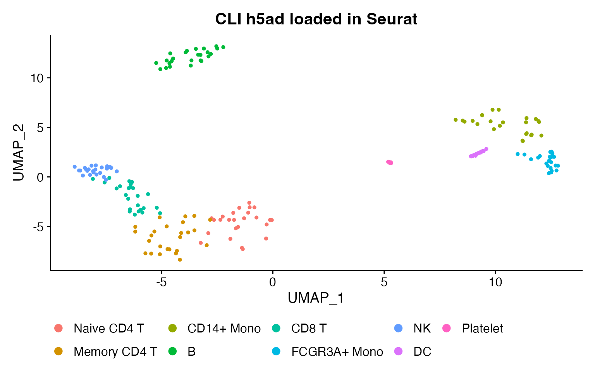
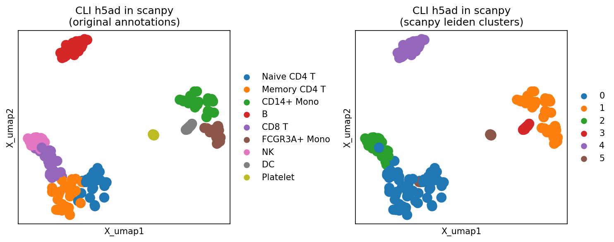
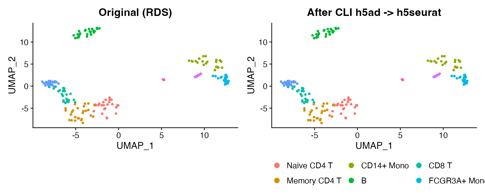
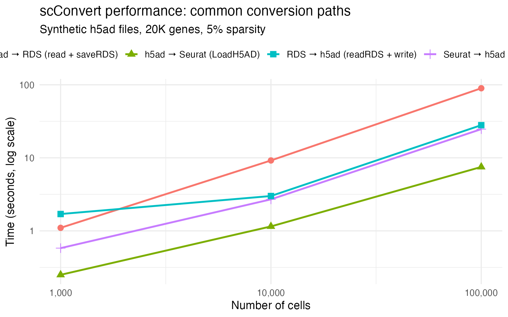

Overview
scConvert provides two ways to convert between single-cell formats without writing analysis code:
C binary (
scconvert) – a standalone executable that converts between h5ad, h5Seurat, h5mu, Loom, and Zarr using streaming I/O. No R or Python runtime required.R function (
scConvert_cli()) – a universal any-to-any converter that covers all nine formats. It automatically dispatches to the fastest available path: C binary first, then R streaming, then the Seurat hub.
Conversion tiers
scConvert_cli() selects a backend in this order:
| Tier | Formats | Method | Speed |
|---|---|---|---|
| C binary | h5ad, h5Seurat, h5mu, Loom, Zarr | Streaming chunk I/O, constant memory | Fastest |
| R streaming | Cross-format HDF5/Zarr pairs | Direct file-to-file, no Seurat object | Fast |
| R hub | RDS, SCE, SOMA, SpatialData | Load → Seurat → Save | Flexible |
The C binary is tried first for any pair where both formats are in
{h5ad, h5Seurat, h5mu, Loom, Zarr}. If the binary is not installed or
the pair is unsupported, scConvert_cli() falls back
transparently.
Supported formats
| Format | Extension | C binary | R streaming | R hub |
|---|---|---|---|---|
| AnnData | .h5ad |
yes | yes | yes |
| h5Seurat | .h5Seurat |
yes | yes | yes |
| MuData | .h5mu |
yes | yes | yes |
| Loom | .loom |
yes | yes | yes |
| Zarr | .zarr |
yes | yes | yes |
| TileDB-SOMA | soma:// |
– | – | yes |
| SpatialData | .spatialdata.zarr |
– | – | yes |
| RDS | .rds |
– | – | yes |
| SingleCellExperiment | in-memory | – | – | yes |
Building the C binary
The C binary is optional. Without it, scConvert_cli()
still works using R.
macOS (Homebrew):
Ubuntu/Debian:
The build produces src/scconvert. Copy it anywhere on
your PATH:
The binary links against libhdf5 and libz (zlib). No other dependencies.
Using the C binary
The conversion direction is auto-detected from file extensions.
Options:
| Flag | Description | Default |
|---|---|---|
--assay <name> |
Assay/modality name | RNA |
--gzip <level> |
Compression level (0–9) | 1 |
--overwrite |
Overwrite existing output | off |
--quiet |
Suppress progress messages | off |
--version |
Print version and exit | |
--help |
Print usage and exit |
Examples:
# HDF5 conversions (direct, streaming)
scconvert data.h5ad data.h5seurat
scconvert data.h5seurat data.h5ad --assay RNA --gzip 6
scconvert multimodal.h5mu multimodal.h5seurat
# Loom conversions (via temp h5seurat internally)
scconvert data.h5ad data.loom
scconvert data.loom data.h5seurat
# Zarr conversions (via temp h5seurat internally)
scconvert data.h5ad data.zarr
scconvert data.zarr data.h5seurat
scconvert data.zarr data.loomFor formats not supported by the C binary (RDS, SOMA, SpatialData), use the R function:
Using scConvert_cli() from R
library(scConvert)
# Any-to-any conversion
scConvert_cli("data.h5ad", "data.h5seurat")
scConvert_cli("data.h5ad", "data.loom")
scConvert_cli("data.h5ad", "data.zarr")
scConvert_cli("data.zarr", "data.rds")
scConvert_cli("data.rds", "data.h5ad")
# Options
scConvert_cli("data.h5ad", "output.h5seurat",
assay = "RNA", gzip = 6L, overwrite = TRUE)R function arguments:
| Argument | Description | Default |
|---|---|---|
input |
Path to input file | (required) |
output |
Path to output file | (required) |
assay |
Assay/modality name | "RNA" |
gzip |
Compression level (0–9) | 4 |
overwrite |
Overwrite existing output | FALSE |
verbose |
Show progress messages | TRUE |
Batch conversion
# Convert all h5ad files in a directory to h5seurat
h5ad_files <- list.files(".", pattern = "\\.h5ad$", full.names = TRUE)
for (f in h5ad_files) {
out <- sub("\\.h5ad$", ".h5seurat", f)
scConvert_cli(f, out)
}Cross-ecosystem interoperability
A converted h5ad file is valid in both R and Python. This section demonstrates converting with the CLI, then visualizing in both ecosystems.
Convert and load in R
library(scConvert)
library(Seurat)
#> Loading required package: SeuratObject
#> Loading required package: sp
#>
#> Attaching package: 'SeuratObject'
#> The following objects are masked from 'package:base':
#>
#> intersect, t
library(ggplot2)
# Start with bundled PBMC data
obj <- readRDS(system.file("testdata", "pbmc_small.rds", package = "scConvert"))
# Round-trip: RDS → h5Seurat → h5ad (CLI) → back to R
h5s_path <- tempfile(fileext = ".h5Seurat")
h5ad_path <- tempfile(fileext = ".h5ad")
writeH5Seurat(obj, h5s_path, overwrite = TRUE, verbose = FALSE)
scConvert_cli(h5s_path, h5ad_path, verbose = FALSE)
#> [1] TRUE
# Load the CLI-produced h5ad
obj_cli <- readH5AD(h5ad_path, verbose = FALSE)
cat("Cells:", ncol(obj_cli), "| Genes:", nrow(obj_cli), "\n")
#> Cells: 214 | Genes: 2000
cat("Reductions:", paste(Reductions(obj_cli), collapse = ", "), "\n")
#> Reductions: pca, umap
DimPlot(obj_cli, reduction = "umap", group.by = "seurat_annotations") +
ggtitle("CLI h5ad loaded in Seurat") + theme(legend.position = "bottom")
Load in scanpy (Python)
The same h5ad file works directly in Python with no re-processing:
import scanpy as sc
import matplotlib
matplotlib.use("Agg")
import matplotlib.pyplot as plt
adata = sc.read_h5ad(r.h5ad_path)
print(f"Shape: {adata.shape}")
print(f"Embeddings: {list(adata.obsm.keys())}")
# Use preserved PCA to compute neighbors
sc.pp.neighbors(adata, use_rep="X_pca")
sc.tl.leiden(adata, resolution=0.5)
fig, axes = plt.subplots(1, 2, figsize=(10, 4))
sc.pl.embedding(adata, basis="X_umap", color="seurat_annotations",
title="Original annotations", ax=axes[0], show=False)
sc.pl.embedding(adata, basis="X_umap", color="leiden",
title="scanpy leiden clusters", ax=axes[1], show=False)
plt.tight_layout()
plt.savefig("scanpy_cli_viz.png", dpi=150, bbox_inches="tight")
plt.close()
PCA embeddings, expression values, and metadata all survive the conversion, so scanpy can compute neighbors and clusters without re-running dimensionality reduction.
Fidelity verification
The CLI preserves all data fields exactly. Here we verify dimensions, barcodes, features, metadata, reductions, graphs, and expression values through an h5ad → h5seurat → h5ad roundtrip.
library(scConvert)
library(Seurat)
ref <- readRDS(system.file("testdata", "pbmc_small.rds", package = "scConvert"))
h5ad_src <- system.file("testdata", "pbmc_small.h5ad", package = "scConvert")
# h5ad → h5seurat via CLI
h5s_path <- tempfile(fileext = ".h5Seurat")
scConvert_cli(h5ad_src, h5s_path, overwrite = TRUE, verbose = FALSE)
#> [1] TRUE
loaded <- readH5Seurat(h5s_path, verbose = FALSE)
#> Validating h5Seurat file
# Dimensions
stopifnot(ncol(loaded) == ncol(ref), nrow(loaded) == nrow(ref))
cat("Dimensions:", ncol(loaded), "cells x", nrow(loaded), "genes\n")
#> Dimensions: 214 cells x 2000 genes
# Barcodes and features
stopifnot(identical(sort(colnames(loaded)), sort(colnames(ref))))
stopifnot(identical(sort(rownames(loaded)), sort(rownames(ref))))
cat("Barcodes and features: exact match\n")
#> Barcodes and features: exact match
# PCA embeddings
pca_ref <- Embeddings(ref, "pca")[colnames(loaded), ]
pca_load <- Embeddings(loaded, "pca")
stopifnot(max(abs(pca_ref - pca_load)) == 0)
cat("PCA:", ncol(pca_load), "components, exact match\n")
#> PCA: 50 components, exact match
# UMAP embeddings
umap_ref <- Embeddings(ref, "umap")[colnames(loaded), ]
umap_load <- Embeddings(loaded, "umap")
stopifnot(max(abs(umap_ref - umap_load)) == 0)
cat("UMAP: exact match\n")
#> UMAP: exact match
# Neighbor graphs
for (g in names(ref@graphs)) {
stopifnot(g %in% names(loaded@graphs))
common <- intersect(rownames(ref@graphs[[g]]), rownames(loaded@graphs[[g]]))
diff <- max(abs(ref@graphs[[g]][common, common] - loaded@graphs[[g]][common, common]))
stopifnot(diff == 0)
cat(g, ": exact match (nnz =", length(loaded@graphs[[g]]@x), ")\n")
}
#> RNA_nn : exact match (nnz = 957 )
#> RNA_snn : exact match (nnz = 2076 )
# Expression counts
ref_c <- GetAssayData(ref, layer = "counts")
load_c <- GetAssayData(loaded, layer = "counts")
stopifnot(max(abs(ref_c[rownames(load_c), colnames(load_c)] - load_c)) == 0)
cat("Counts: exact match\n")
#> Counts: exact match
unlink(h5s_path)Visual comparison
library(ggplot2)
h5s_test <- tempfile(fileext = ".h5Seurat")
scConvert_cli(h5ad_src, h5s_test, overwrite = TRUE, verbose = FALSE)
#> [1] TRUE
obj_test <- readH5Seurat(h5s_test, verbose = FALSE)
#> Validating h5Seurat file
p1 <- DimPlot(ref, reduction = "umap", group.by = "seurat_annotations") +
ggtitle("Original (RDS)") + theme(legend.position = "none")
p2 <- DimPlot(obj_test, reduction = "umap", group.by = "seurat_annotations") +
ggtitle("After CLI h5ad -> h5seurat") + theme(legend.position = "bottom")
p1 + p2
unlink(h5s_test)UMAP plots are identical because PCA embeddings, graph structures, and cluster labels are all preserved exactly.
Performance
C binary internals
The C binary achieves high throughput through three techniques:
- Direct chunk copy: When source and destination use the same gzip compression, compressed chunks transfer without decompression.
- Sparse zero-copy: CSR (cells x genes) and CSC (genes x cells) share identical data/indices/indptr arrays – only the shape metadata changes.
- Low default compression: Gzip level 1 writes ~3x faster than level 4 with only ~10% size increase.
Benchmark
Median wall-clock seconds on synthetic sparse h5ad files (20K genes, 5% density). Measured on Apple M4 Max, 48 GB RAM.
| Cells | h5ad -> Seurat | Seurat -> h5ad | CLI h5ad -> h5seurat | CLI h5seurat -> h5ad |
|---|---|---|---|---|
| 1,000 | 0.28 s | 0.61 s | 0.02 s | 0.02 s |
| 10,000 | 0.49 s | 1.6 s | 0.04 s | 0.03 s |
| 50,000 | 1.4 s | 6.0 s | 0.13 s | 0.16 s |
| 100,000 | 2.9 s | 11.7 s | 0.29 s | 0.26 s |
The C binary is ~10–50x faster than the R API for format-to-format
conversion because it never constructs a Seurat object. For loading data
into R for analysis, use readH5AD() or
readZarr() instead.

For datasets exceeding available memory, readH5AD()
supports on-disk loading via BPCells:
obj <- readH5AD("large_dataset.h5ad", use.bpcells = TRUE)Format reference
| Feature | h5ad | h5Seurat | h5mu | Loom | Zarr | RDS | SCE |
|---|---|---|---|---|---|---|---|
| File-based | Yes | Yes | Yes | Yes | Dir | Yes | No |
| Python interop | Native | – | Native | Yes | Native | – | – |
| R interop | scConvert | Native | scConvert | scConvert | scConvert | Native | Native |
| Multimodal | layers | assays | Native | – | layers | assays | altExps |
| Spatial | Yes | Yes | Limited | – | Yes | Yes | Limited |
| Cloud-native | – | – | – | – | Yes | – | – |
| C binary | Yes | Yes | Yes | Yes | Yes | – | – |
See Also
- Converting Between Seurat and Zarr – direct Zarr streaming converters and round-trip examples
Session Info
sessionInfo()
#> R version 4.5.2 (2025-10-31)
#> Platform: aarch64-apple-darwin20
#> Running under: macOS Tahoe 26.3
#>
#> Matrix products: default
#> BLAS: /System/Library/Frameworks/Accelerate.framework/Versions/A/Frameworks/vecLib.framework/Versions/A/libBLAS.dylib
#> LAPACK: /Library/Frameworks/R.framework/Versions/4.5-arm64/Resources/lib/libRlapack.dylib; LAPACK version 3.12.1
#>
#> locale:
#> [1] en_US.UTF-8/en_US.UTF-8/en_US.UTF-8/C/en_US.UTF-8/en_US.UTF-8
#>
#> time zone: America/Indiana/Indianapolis
#> tzcode source: internal
#>
#> attached base packages:
#> [1] stats graphics grDevices utils datasets methods base
#>
#> other attached packages:
#> [1] ggplot2_4.0.2 Seurat_5.4.0 SeuratObject_5.3.0 sp_2.2-1
#> [5] scConvert_0.1.0
#>
#> loaded via a namespace (and not attached):
#> [1] RColorBrewer_1.1-3 jsonlite_2.0.0 magrittr_2.0.4
#> [4] spatstat.utils_3.2-2 farver_2.1.2 rmarkdown_2.30
#> [7] fs_1.6.7 ragg_1.5.0 vctrs_0.7.1
#> [10] ROCR_1.0-12 spatstat.explore_3.7-0 htmltools_0.5.9
#> [13] sass_0.4.10 sctransform_0.4.3 parallelly_1.46.1
#> [16] KernSmooth_2.23-26 bslib_0.10.0 htmlwidgets_1.6.4
#> [19] desc_1.4.3 ica_1.0-3 plyr_1.8.9
#> [22] plotly_4.12.0 zoo_1.8-15 cachem_1.1.0
#> [25] igraph_2.2.2 mime_0.13 lifecycle_1.0.5
#> [28] pkgconfig_2.0.3 Matrix_1.7-4 R6_2.6.1
#> [31] fastmap_1.2.0 fitdistrplus_1.2-6 future_1.69.0
#> [34] shiny_1.13.0 digest_0.6.39 patchwork_1.3.2
#> [37] tensor_1.5.1 RSpectra_0.16-2 irlba_2.3.7
#> [40] textshaping_1.0.4 labeling_0.4.3 progressr_0.18.0
#> [43] spatstat.sparse_3.1-0 httr_1.4.8 polyclip_1.10-7
#> [46] abind_1.4-8 compiler_4.5.2 bit64_4.6.0-1
#> [49] withr_3.0.2 S7_0.2.1 fastDummies_1.7.5
#> [52] MASS_7.3-65 tools_4.5.2 lmtest_0.9-40
#> [55] otel_0.2.0 httpuv_1.6.16 future.apply_1.20.2
#> [58] goftest_1.2-3 glue_1.8.0 nlme_3.1-168
#> [61] promises_1.5.0 grid_4.5.2 Rtsne_0.17
#> [64] cluster_2.1.8.2 reshape2_1.4.5 generics_0.1.4
#> [67] hdf5r_1.3.12 gtable_0.3.6 spatstat.data_3.1-9
#> [70] tidyr_1.3.2 data.table_1.18.2.1 spatstat.geom_3.7-0
#> [73] RcppAnnoy_0.0.23 ggrepel_0.9.7 RANN_2.6.2
#> [76] pillar_1.11.1 stringr_1.6.0 spam_2.11-3
#> [79] RcppHNSW_0.6.0 later_1.4.8 splines_4.5.2
#> [82] dplyr_1.2.0 lattice_0.22-9 survival_3.8-6
#> [85] bit_4.6.0 deldir_2.0-4 tidyselect_1.2.1
#> [88] miniUI_0.1.2 pbapply_1.7-4 knitr_1.51
#> [91] gridExtra_2.3 scattermore_1.2 xfun_0.56
#> [94] matrixStats_1.5.0 stringi_1.8.7 lazyeval_0.2.2
#> [97] yaml_2.3.12 evaluate_1.0.5 codetools_0.2-20
#> [100] tibble_3.3.1 cli_3.6.5 uwot_0.2.4
#> [103] xtable_1.8-8 reticulate_1.45.0 systemfonts_1.3.1
#> [106] jquerylib_0.1.4 dichromat_2.0-0.1 Rcpp_1.1.1
#> [109] globals_0.19.1 spatstat.random_3.4-4 png_0.1-8
#> [112] spatstat.univar_3.1-6 parallel_4.5.2 pkgdown_2.2.0
#> [115] dotCall64_1.2 listenv_0.10.1 viridisLite_0.4.3
#> [118] scales_1.4.0 ggridges_0.5.7 purrr_1.2.1
#> [121] crayon_1.5.3 rlang_1.1.7 cowplot_1.2.0